IntelliCall AI - AI Voice Calling Agents for Lead & Campaign Automation SaaS Platform
Welcome to IntelliCall AI v2. This version includes full SaaS capabilities (plans, payments, multi-tenancy) on top of the powerful AI calling engine.
📦 What's New in Version 2
🚀 Full SaaS Architecture
Launch your own AI calling business. Users sign up, subscribe to plans, and manage their own agents and campaigns isolated from others.
💳 Multi-Payment Support
Native integration with Stripe, PayPal, Razorpay, and Dodo Payments. Just add your keys and start accepting payments.
🎨 Modern Landing Page
A high-converting, responsive landing page is included out of the box, fully integrated with the authentication and billing systems.
👑 Super Admin Panel
Manage users, track revenue, create subscription plans, and configure system-wide settings from a dedicated admin route.
📦 What's Included
- Backend API (Node.js/Express) - Core logic, telephony integration, and real-time streaming using WebSockets.
- Frontend Dashboard (Next.js/React) - Administrative interface for managing leads, agents, and monitoring calls.
- Telephony Integration (Twilio) - Seamless voice and media stream handling.
- AI Integration - Customizable AI agents powered by OpenAI/Deepgram/etc.
✨ Key Features
🧠 AI Intelligence
- Premium Voice (TTS): Integration with ElevenLabs for human-like voices.
- Real-time Understanding: Powered by Deepgram for ultra-low latency STT.
- Advanced LLM Logic: Use GPT-4, Claude 3, and more via OpenRouter.
- Custom AI Personas: Define goals, constraints, and personality for every agent.
📅 Campaign Operations
- Bulk Outbound Dialing: Automate thousands of calls with a single click.
- Lead Management: Import CSVs, manage tags, and track qualification status.
- Smart Retries: Handle busy lines, no-answers, and failed attempts.
- Campaign Monitoring: Real-time progress tracking of active calling batches.
📊 Analytics & Insights
- Auto-Qualification: AI automatically scores leads based on conversation.
- Call Summaries: Instant TL;DR generated right after the call ends.
- Full Transcripts: Complete word-for-word history of every interaction.
- Audio Recording: Built-in modern player for QA and agent training.
🔐 Enterprise Ready
- Google OAuth: Secure, unified login for your entire organization.
- RBAC Security: Granular Admin and Member permission hierarchies.
- Real-time Streams: High-performance bidirectional WebSocket architecture.
- Responsive UI: Premium dark-mode dashboard that works on any device.
📋 Requirements
| Requirement | Version/Target | Download/Link |
|---|---|---|
| Node.js | 18.x or higher | nodejs.org |
| MongoDB | 6.x or higher | mongodb.com |
| Twilio Account | Active Account | twilio.com |
| Google Cloud | OAuth 2.0 Client ID | Cloud Console |
⚡ Easy Install (Recommended)
The fastest way to get started is with our Setup & Customization Wizard. It handles environment configuration, dependency installation, and component linking automatically.
Step 1: Run Setup Wizard
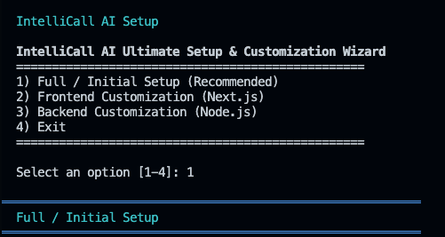macOS / Linux:
cd Projects_v2/setup
bash setup.shWindows (PowerShell as Admin):
cd Projects_v2/setup
.\setup.ps1Step 2: Follow the Prompts
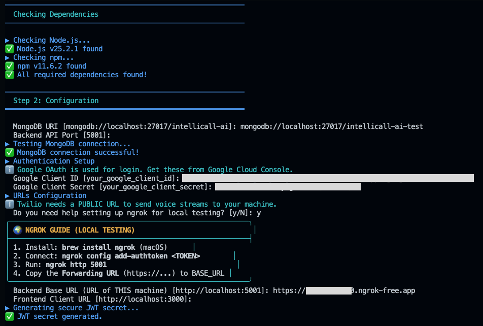The wizard will guide you through:
- ✅ Dependency Checks: Ensures Node and npm are ready.
- ✅ Database Setup: Connects and tests your MongoDB.
- ✅ Auth Configuration: Prompts for Google Client IDs.
- ✅ Environment Generation: Creates secure
.envfiles for both backend and frontend. - ✅ ngrok Assistant: Built-in guide for local testing and Twilio webhook setup.
- ✅ Auto-Validation: Tests the backend connection to ensure everything is perfect.
🎉 Done! After setup, start your services using npm run dev in the
backend and frontend folders.
🔧 Manual Setup (Advanced)
While the wizard is recommended, you can set up each component manually if needed.
Backend API Setup
cd Projects_v2/backend
npm install
cp .env.example .envRequired Backend Variables:
| Variable | Description |
|---|---|
MONGODB_URI |
MongoDB connection string |
JWT_SECRET |
Secret for token generation |
GOOGLE_CLIENT_ID |
Google OAuth Client ID |
GOOGLE_CLIENT_SECRET |
Google OAuth Client Secret |
BASE_URL |
Your server's public URL |
Frontend Dashboard Setup
cd Projects_v2/frontend
npm install
cp .env.example .envRequired Frontend Variable:
Set NEXT_PUBLIC_API_URL to your backend endpoint (e.g.,
http://localhost:5001/api).
🔐 Google OAuth Setup
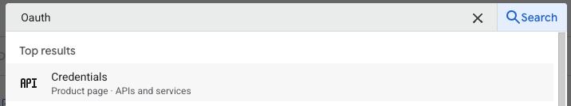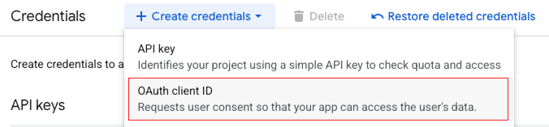
- Create a new project in Google Cloud Console.
- Enable **OAuth Consent Screen** and add
emailandprofilescopes. - Create **OAuth 2.0 Client IDs** (Web Application).
- Add Authorized Redirect URI:
[BASE_URL]/api/auth/google/callback. - Copy Client ID and Secret to your backend
.envfile.
📞 Twilio Configuration
Twilio is the communication backbone that enables the platform to place outbound calls and handle voice streams.
- Log in to the Twilio Console.
- Obtain your Account SID and Auth Token from the Account Dashboard. 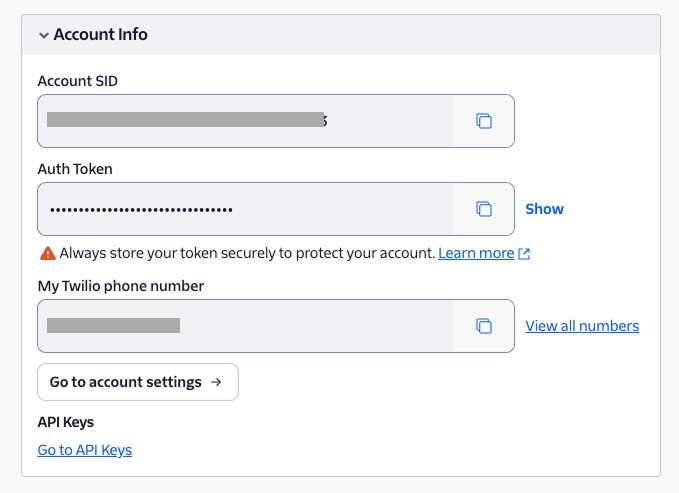
- Get a voice-capable Twilio Phone Number.
- In the IntelliCall AI Dashboard, navigate to Settings > API Keys.
- Enter your SID, Token, and Phone Number (in E.164 format, e.g.,
+1234567890). - Crucial Step: Ensure your
BASE_URLis correctly set in your backend.envfile (e.g., your ngrok URL or public domain). The platform uses this to tell Twilio where to send voice and status updates.
🌍 Local Testing with ngrok
Twilio needs a public URL to send events (like voice streams) to your local machine. ngrok creates a secure tunnel from the internet to your local server.
1. Install ngrok
- Windows: Download the ZIP from ngrok.com, extract it, and run the
.exe. - macOS (Homebrew): Run
brew install ngrok/ngrok/ngrok. - Linux: Use
curl -s https://ngrok-agent.s3.amazonaws.com/ngrok.asc | sudo tee /etc/apt/trusted.gpg.d/ngrok.asc >/dev/null && echo "deb https://ngrok-agent.s3.amazonaws.com buster main" | sudo tee /etc/apt/sources.list.d/ngrok.list && sudo apt update && sudo apt install ngrok.
2. Connect your account
Signup at ngrok.com and get your Authtoken. Run this in your terminal:
ngrok config add-authtoken YOUR_AUTHTOKEN_HERE3. Start the tunnel
Start your backend (default port 5001) and then run:
ngrok http 50014. Copy the URL
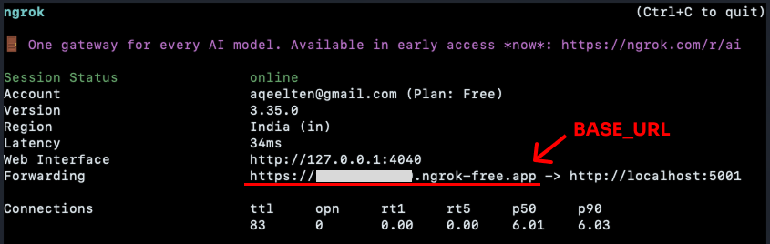Copy the Forwarding URL (e.g., https://a1b2-c3d4.ngrok-free.app)
and use it as your BASE_URL in the backend .env file.
Note: If using the free version, your URL changes every time you restart ngrok. Remember to
update your .env and Settings accordingly!
🎙️ ElevenLabs Configuration (TTS)
ElevenLabs provides the high-quality Text-to-Speech (TTS) engine that gives your AI agent its voice.
- Get your API Key from the ElevenLabs Developer Settings. 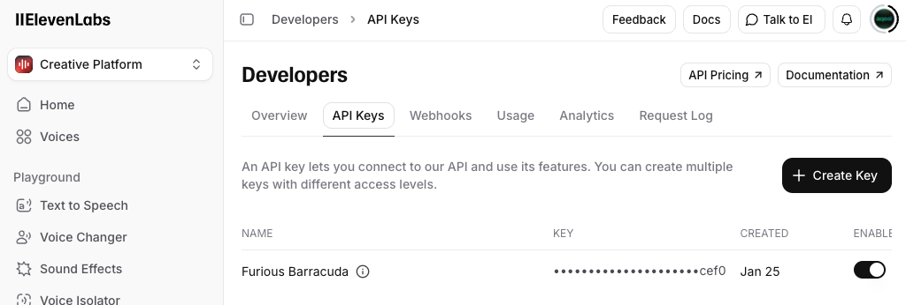
- In the IntelliCall AI Dashboard, go to Settings > API Keys.
- Paste your key into the ElevenLabs API Key field and click Save Changes.
👂 Deepgram Configuration (STT)
Deepgram powers the Speech-to-Text (STT) engine, allowing the AI to understand the lead's voice in real-time with ultra-low latency.
-
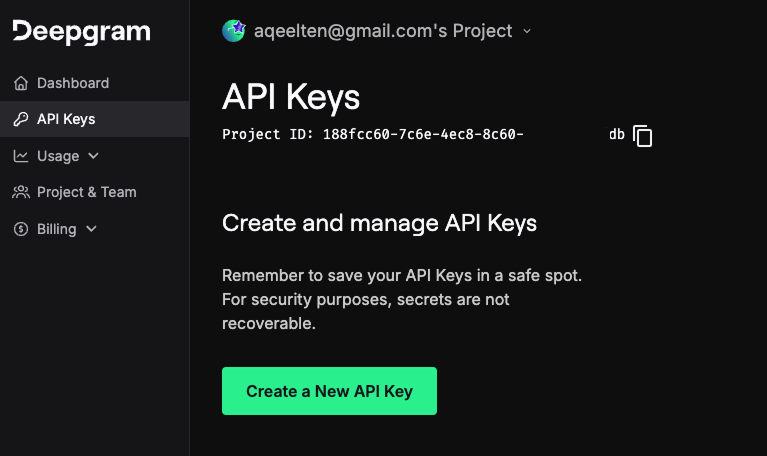
- Create an account and generate an API key at console.deepgram.com (under the API Keys section).
- In the IntelliCall AI Dashboard, go to Settings > API Keys.
- Paste your key into the Deepgram API Key field and click Save Changes.
🧠 OpenRouter Setup (LLM)
OpenRouter is used to access advanced Large Language Models (like GPT-4 or Claude 3) that drive the conversation logic and call analysis.
-
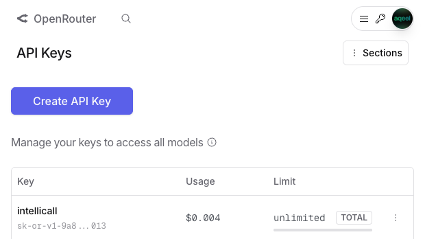
- Generate your API Key at openrouter.ai/settings/keys.
- In the IntelliCall AI Dashboard, go to Settings > API Keys.
- Paste your key into the OpenRouter API Key field and click Save Changes.
Update all the settings in the Settings page.
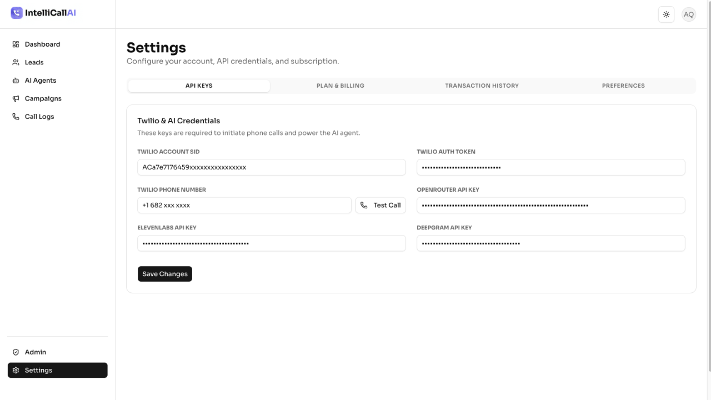👑 Admin Panel Guide
The Admin Panel is the control center for your SaaS. It is accessible only to users with the
admin role.
To access: Log in as an admin and navigate to /admin or click "Admin"
in the sidebar.
🛡️ First User as Admin: The very first user to sign up on your platform is automatically assigned the Admin role. All subsequent users will be assigned the Member role by default. You can manage user roles from the User Management section.
1. User Management
View all registered users, their email addresses, and subscription status.
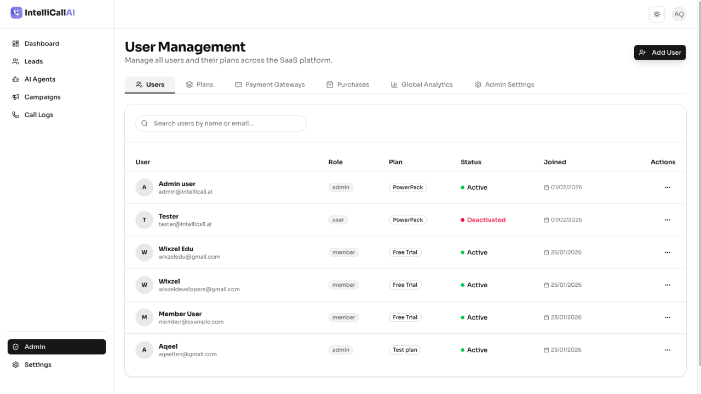2. Plan Management (/admin/plans)
Define the tiers for your SaaS (e.g., Free, Pro, Enterprise). You can configure:
- Name & Description: Visible on the pricing page.
- Price & Interval: Monthly, Yearly, or One-time.
- Resource Limits:
- Max Agents
- Max Campaigns
- Lead Capacity
- Total Calls/Minutes per month
3. Purchase History (/admin/purchases)
Track all transactions across all payment gateways. View status (Success, Failed), user, plan, and amount.
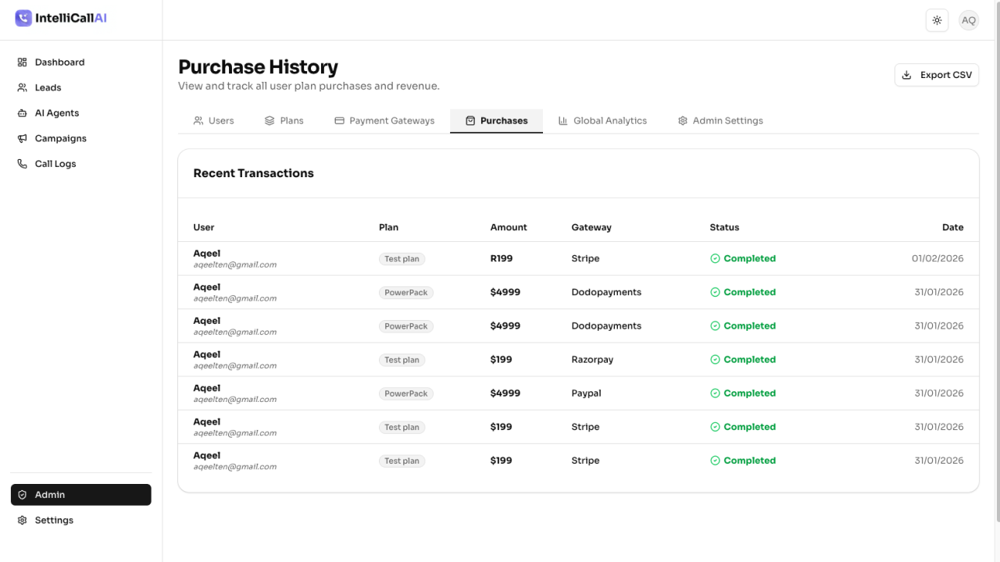4. Gateway Settings (/admin/gateways)
Enable/Disable specific payment providers and manage their API keys directly from the UI.
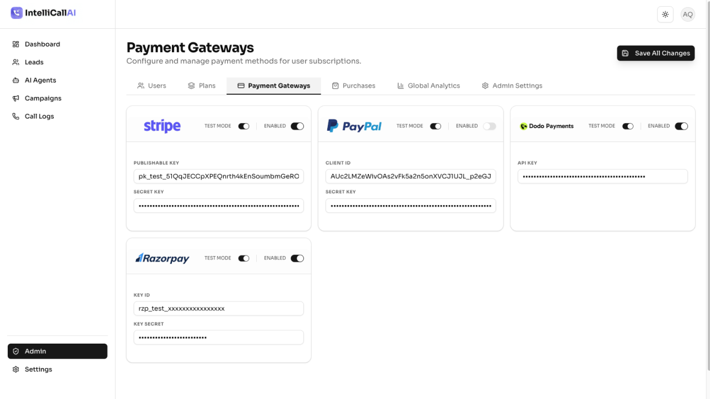👥 User Roles
IntelliCall AI supports two primary user roles for secure collaboration within your platform.
🛡️ Initial Admin Assignment: The very first user to create an account on your platform (via Google OAuth or manual signup) is automatically granted the Admin role. Subsequent users are assigned the Member role by default.
| Role | Permissions |
|---|---|
| Admin | Full access to all features, including System Settings, API Key management, and User management. This role is assigned to the first registered user. |
| Member | Can manage leads, agents, and campaigns, but cannot access global system settings or manage other users. |
💳 Payment Gateways Setup
IntelliCall AI v2 supports 4 major payment providers. You can enable any combination of them.
Go to Admin Panel > Gateways to configure these.
Stripe
- Go to Stripe Developer Dashboard.
- Copy your Publishable Key (pk_...) and Secret Key (sk_...).
- Paste them into the Stripe section in the Admin Panel.
- Toggle Enabled to On.
PayPal
- Go to PayPal Developer Dashboard.
- Create a new App. Copy the Client ID and Secret Key.
- Paste them into the PayPal section in the Admin Panel.
- Toggle Enabled to On.
- For testing, refer to the PayPal Sandbox Guide.
Razorpay
- Go to Razorpay Dashboard.
- Generate a new Key. Copy Key ID and Key Secret.
- Paste them into the Razorpay section in the Admin Panel.
Dodo Payments
- Go to Dodo Payments Dashboard.
- Copy your API Key.
- If you are using Product IDs for plans, ensure the Dodo Product ID field in your Plan config matches the product ID in Dodo.
- Webhook Setup (Important):
- Go to Dodo Developer Webhooks.
- Add a new Webhook Endpoint:
[BASE_URL]/api/payments/dodopayments/webhook. - Local Testing: Ensure you have ngrok configured (see Twilio & ngrok section) to get a public URL for your local server.
📊 User Plans & Billing
How users subscribe to your services:
- Sign Up: Users arrive at the landing page and click "Get Started".
- Dashboard Access: New users (Member role) have restricted access based on the Free/Default plan limits.
- Upgrade Flow:
- User navigates to Settings > Plan & Billing.
- They see all active plans you created in the Admin Panel.
- They click "Upgrade", select a Payment Gateway, and complete the transaction.
- Instant Activation: Upon successful payment, their account limits (Agents, Calls, etc.) are instantly updated.
🤖 Creating AI Agents
Agents are the "brains" of your calls. You can customize how they speak and behave.
- Navigate to the AI Agents page in the dashboard. 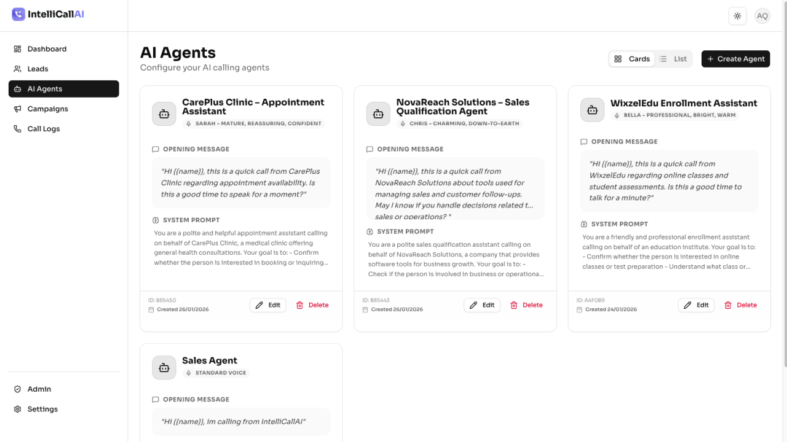
- Click + Create Agent. 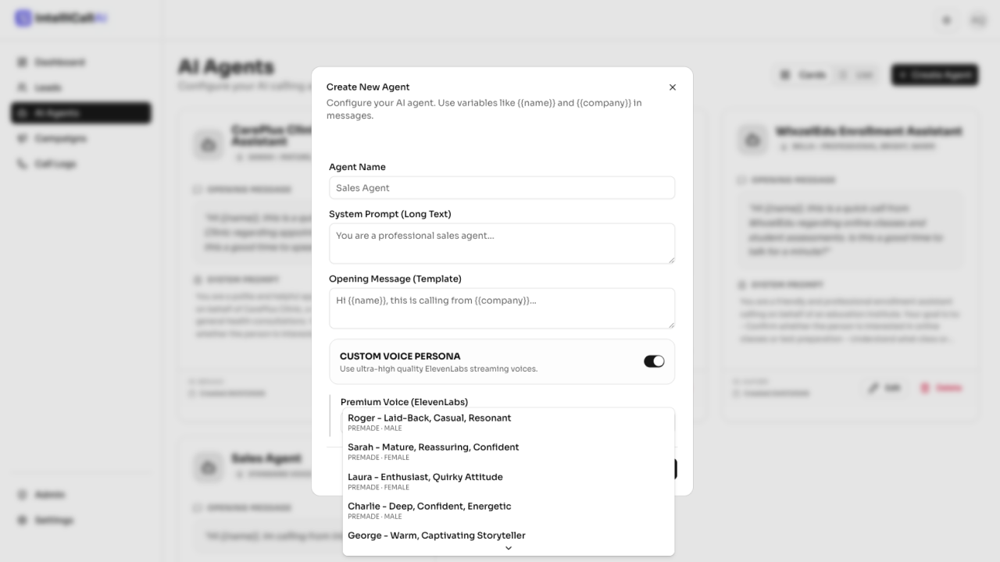
- Name: Give your agent a descriptive name (e.g., "Sales Assistant").
- System Prompt: Define the agent's personality and goals (e.g., "You are a helpful sales representative for a solar company...").
- Opening Message: This is the first thing the agent says when the lead answers. (Optional)
- Voice Settings: Select a voice name (like "Rachel") or provide a custom ElevenLabs Voice ID for premium results.
📅 Creating Campaigns
Campaigns allow you to automate calls to a list of leads using a specific AI Agent.
- Ensure you have imported leads in the Leads page. 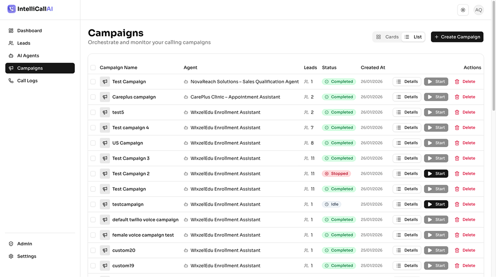
- Go to the Campaigns page and click + Create Campaign.
- Select the AI Agent you want to use.
- Select the Leads or specific tags you want to target.
- Click Start on the campaign card to begin the automated calling process.
📊 Call Logs & Analytics
Monitor your performance with detailed conversation history and AI-driven insights.
- Viewing Logs: The Call Logs page shows every interaction, including the status, duration, and AI qualification score. 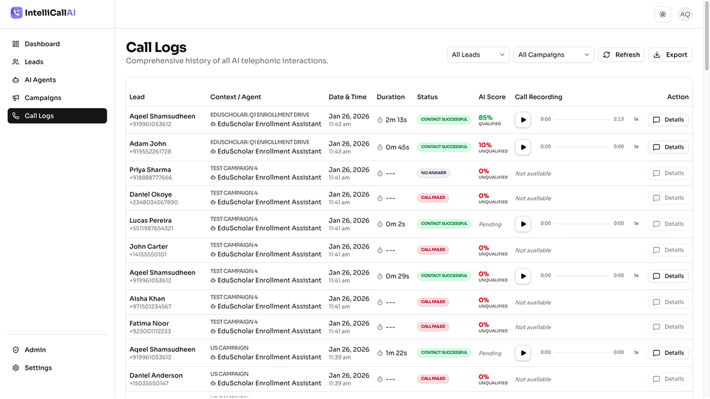
- Conversation Details: Click Details on any log to see the full transcript between the AI and the lead. 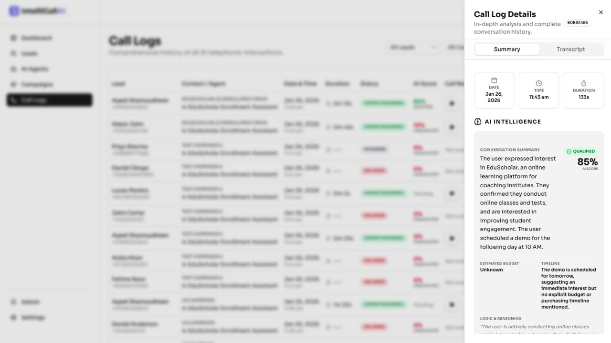
- Auto-Analysis: To enable automatic call summaries and qualification scores, go to Settings > Preferences and toggle Automatic Call Analysis ON. This uses OpenRouter to analyze the transcript immediately after the call ends. 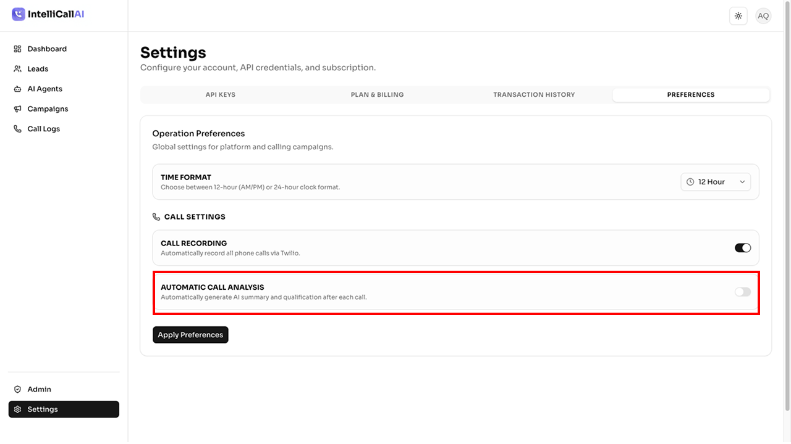
⏺️ Call Recording
Keep a record of all conversations for quality assurance and training.
- Go to Settings > Preferences.
- Toggle Call Recording to ON.
- Once enabled, a play button will appear in the Call Logs table for all new calls.
- You can listen to recordings directly in the browser using the built-in modern audio player.

🎨 Frontend Customization
The solution includes a polished Next.js landing page. Here is how to make it yours:
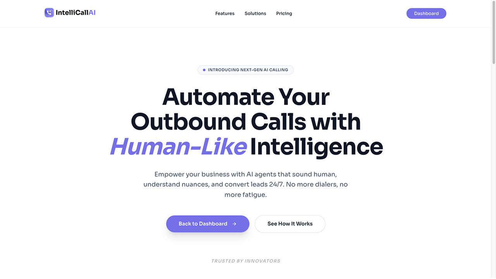Landing Page (`frontend/app/page.tsx`)
This file contains the Hero, Features, Pricing, and Testimonials sections.
- Hero Text: Search for
Automate Your Outbound Callsto change the main headline. - Images/Colors: The theme uses
--primary-colorand Tailwind utility classes. Editfrontend/app/globals.cssto change the brand color (default:#8078F0). - Testimonials: Located in the
Testimonialssection array. Update the text and author names.
Additional Pages
You can find and edit these files to add your legal text and company info:
- About Us:
frontend/app/about/page.tsx - Contact:
frontend/app/contact/page.tsx - Privacy Policy:
frontend/app/privacy/page.tsx - Terms of Service:
frontend/app/terms/page.tsx
❓ Troubleshooting
Common Console Errors
| Error Log | Resolution |
|---|---|
❌ Missing API keys for Custom Voice |
You enabled "Use Custom Voice" on an Agent but haven't provided Deepgram or ElevenLabs keys in Settings > API Keys. |
❌ Deepgram Error / ElevenLabs Error |
Verify your API keys are correct and have remaining credits. Ensure your firewall isn't blocking outbound WebSocket connections. |
❌ LLM Error / OpenRouter Error |
Check your OpenRouter API key and ensures you have a positive balance in your OpenRouter account. |
❌ Twilio Voice Webhook Error |
Your BASE_URL is likely unreachable by Twilio. Check your ngrok tunnel and
ensure the URL in .env matches. |
❌ Could not find Agent or Lead |
The Call SID was received but the associated database records are missing. Ensure you haven't deleted the agent or lead while a call was in progress. |
"WebSocket connection failed"
- Ensure
BASE_URLin backend.envis correct. - If using ngrok, ensure the tunnel is active and the URL matches.
"Google Auth Error"
- Verify Redirect URIs in Google Console match exactly.
- Ensure
JWT_SECRETis set in backend.
"Database connection error"
- Verify MongoDB service is running.
- Check if the IP is whitelisted (if using MongoDB Atlas).
✉️ Need Technical Support?
If you have purchased any of my products from CodeCanyon, you are eligible for free support. Open a ticket to get help with installation, bugs, or general queries.
Support Portal: https://envato.aqeelshamz.com/
Email: aqeelten@gmail.com